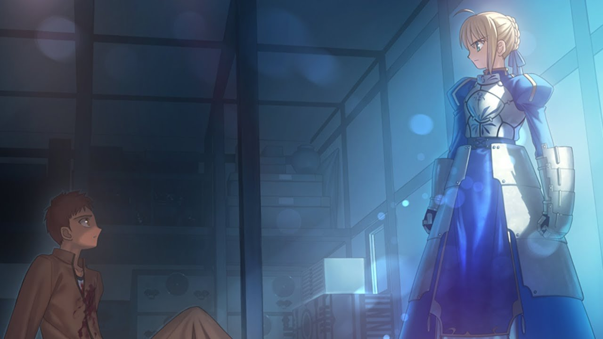

About Fate/stay night
Fate/stay night is a visual novel that is split up into three different routes, and is about Shirou Emiya, a young amatuer mage, who finds himself caught up in a dangerous tournement known as the "Holy Grail War". The Holy Grail War is comprised of seven mages and seven Heroic Spirits, also known as sevants, and the mages fight alongside their sevants, unil either there is one mage remaining or all but one of the Heroic Spirits have been defeated. The winner of the Holy Grail War is able to get their own wish granted by the grail.
Typically, each route in Fate/stay night starts off the same with Shirou accidentally finding himself caught up in the conflict of the Holy Grail War finding himself in a dangerous situation, and Shirou ends up summing Saber, a heroic spirit. The first route in the series, known as “Fate”, focuses on the journey and bond between Shirou and Saber as Saber opens up more to Shirou, and both grow as characters. The second route of the series, known as “Unlimited Blade Works” or “UBW”, focuses on Shirou and his relationship with his classmates Rin Tohsaka, who turns out to be a skilled mage and the master of Archer. During the events of UBW, Shirou loses control of Saber and Rin gets betrayed by Archer, forcing Shirou and Rin to rely on their abilities to use magic to fight in the Holy Grail War. The third route of the series, known as “Heaven’s Feel”, is the black sheep of the series as it is much darker than the other routes. Heaven’s Feel focuses on Shirou and his relationship with one of his long-time friends Sakura, and later in the story Shriou has to help Sakura regain her humanity back from the corruption of the Grail.
This is a really oversimplification of the Fate/stay night series, and explaining the entire series without spoiling it or explaining every little detail is a jarring task due to the series being known for being really convoluted.